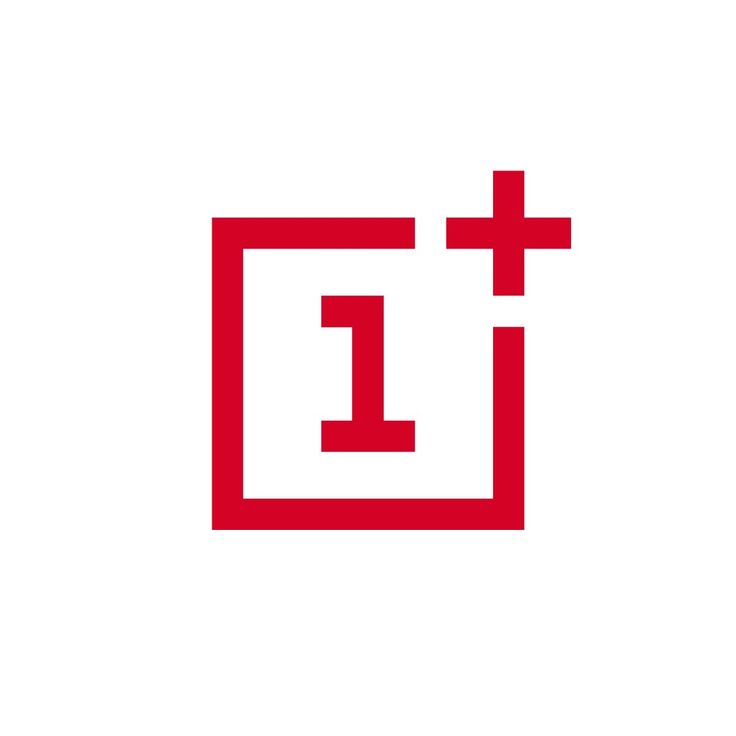
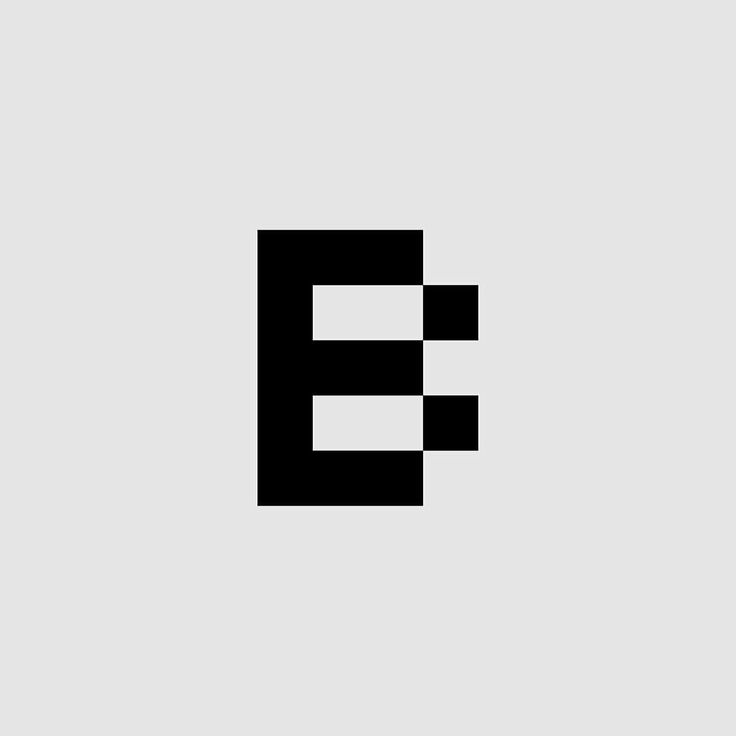
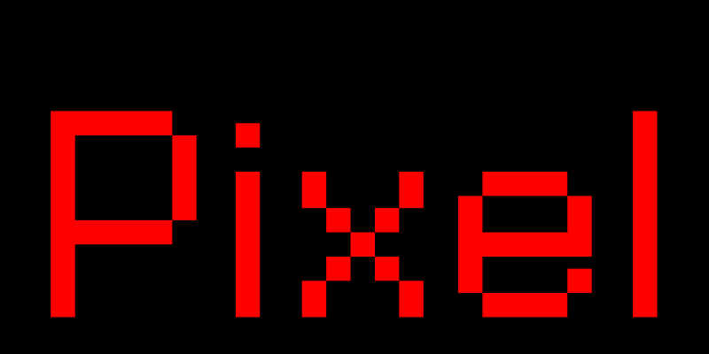
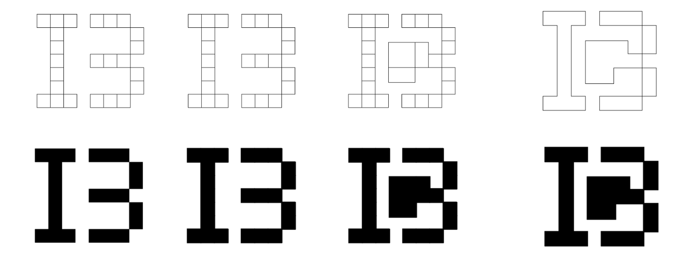
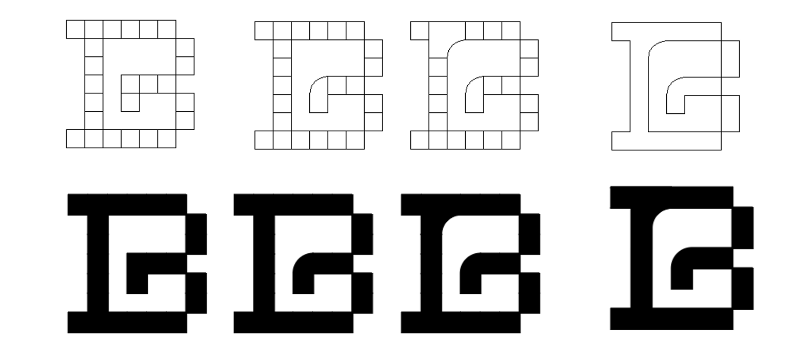
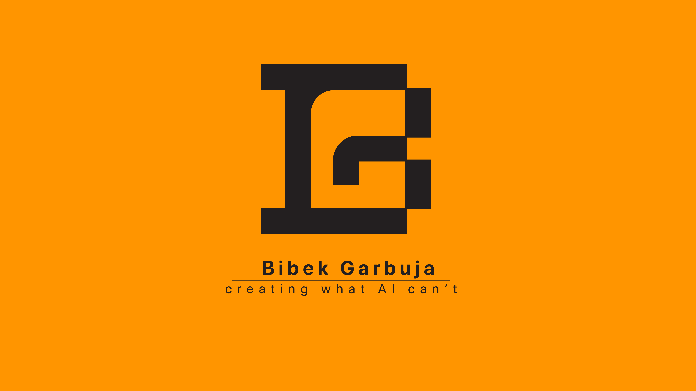

Recent Work
Personal Logo Design Project
Mood Board
1. Simple and Instantly Recognizable

2. Pixelated, Developer Aesthetic — Less is More


2. Artistic, symbolic, and Unique
3. Conveys the artist’s name, Bibek Garbuja
BIBEK GARBUJA
DESIGN PROCESS
First verrsion:

Final version:

Note: I preferred the second version because it better captures the essence of my artistic identity. And it is more aesthetically pleasing, and readable. It has a cleaner and unique shape design.
FINAL LOOK
